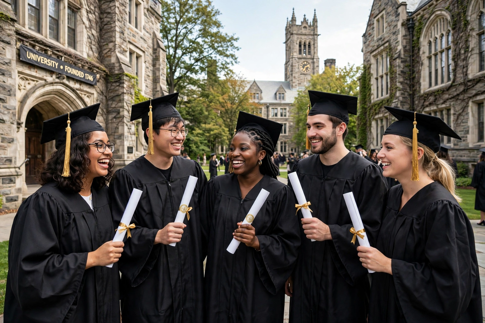

Higher education is tertiary education leading to the award of an academic degree, provided mainly by universities and colleges. It follows secondary education and includes undergraduate (bachelor's) and postgraduate (master's and doctoral) study, as well as professional qualifications.

Early centres included Nalanda in India, al-Qarawiyyin in Fez and al-Azhar in Cairo, and medieval European universities such as Bologna (1088), Oxford and Paris. The Humboldtian model joined teaching with research; the 19th–20th centuries brought mass expansion, land-grant universities, and women's admission.
Countries differ in funding — public, private, tuition-based — accreditation, and governance. Contemporary debates concern access and equity, student debt, academic freedom, rankings, international student mobility, online and lifelong learning, and the role of research in innovation.
Graduates on average earn more and report better health and civic participation, though returns vary by field and institution.